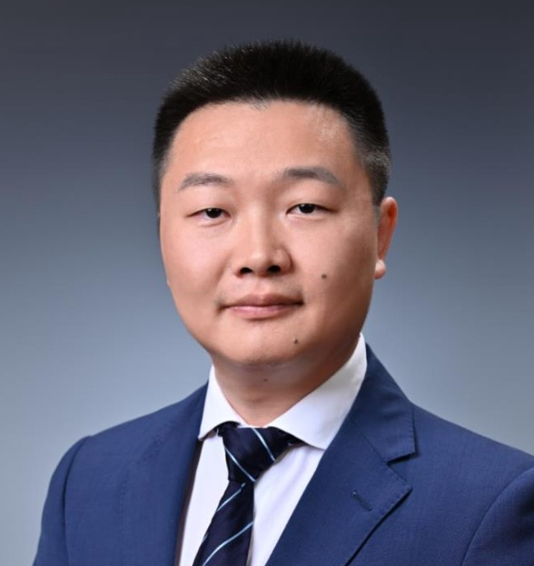

Structure-Preserving Spectral and Spectral-Element Methods
Divergence-free spectral bases, Gauss's-law-preserving Maxwell solvers, curl-curl discretizations, and high-order methods for wave propagation and scattering in unbounded domains.
Associate Professor, School of Mathematical Sciences, Shanghai Jiao Tong University.

Associate Professor
School of Mathematical Sciences
Shanghai Jiao Tong University
My research lies in applied and computational mathematics, with a focus on scientific computing and numerical analysis. One central thread is the development of structure-preserving spectral and spectral-element algorithms for wave problems and electromagnetic systems, especially when divergence constraints, Gauss's law, or long-time stability are essential.
Since joining Shanghai Jiao Tong University in September 2020, I have developed a research program around three connected directions: structure-preserving high-order methods for electromagnetic wave problems; analytically solvable, asymptotic-preserving, and structure-preserving methods for electromagnetic-kinetic transport; and analysis and computation of complex condensed-matter systems, especially liquid crystals and moiré materials.
Divergence-free spectral bases, Gauss's-law-preserving Maxwell solvers, curl-curl discretizations, and high-order methods for wave propagation and scattering in unbounded domains.
Analytically solvable, asymptotic-preserving, and structure-preserving schemes for Vlasov-Poisson, Vlasov-Ampère, and Vlasov-Maxwell systems, including the ASAP framework for strongly oscillatory plasma regimes.
Projection-type methods for quasiperiodic eigenvalue problems and rotational discrete-gradient schemes for constrained gradient flows and hydrodynamic liquid-crystal models.
My teaching emphasizes learning by doing, conceptual clarity, and intellectual independence. I have taught undergraduate and graduate courses in numerical methods, linear algebra, optimization methods, differential equations, and advanced computational methods.
I view research supervision as an extension of teaching: helping students formulate good questions, read efficiently, write clearly, and gradually grow into independent scholars.